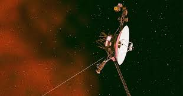

Top 5 Cosmic Objects
Made by Clara
1.Messier 87, the first image of a Black hole

2.The Crab Nebula

3.The Day the Earth Smiled, a probe called Cassini took the a photo of Earth far away in Saturn's rings

4. Voyager 1, the first spacecraft to leave the Solar System

5.The Pillars of Creation